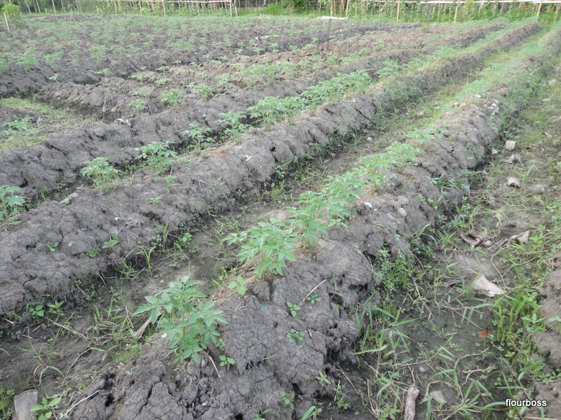
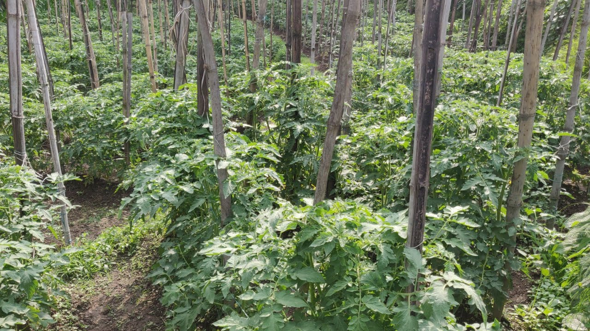
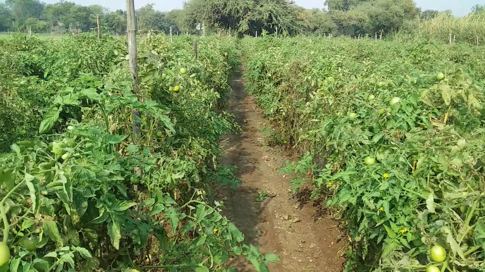
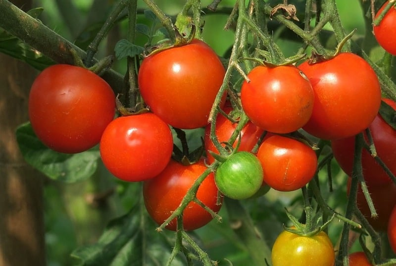
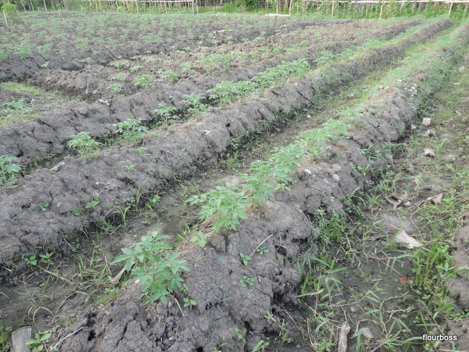
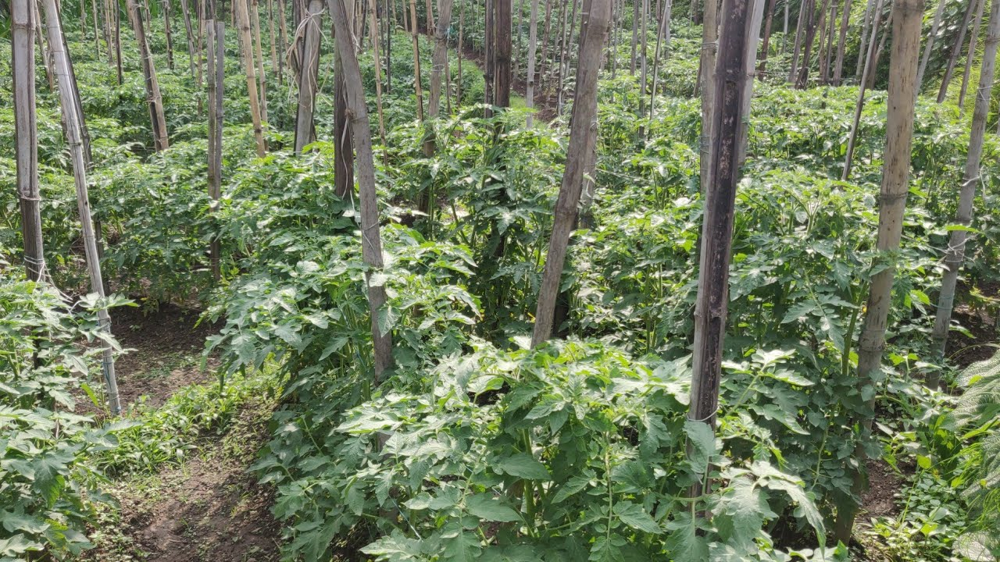
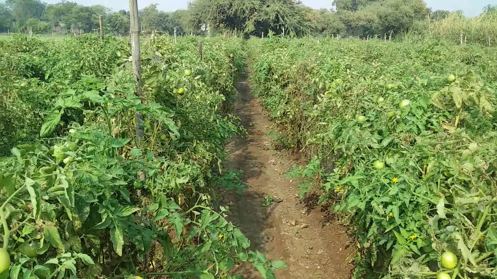
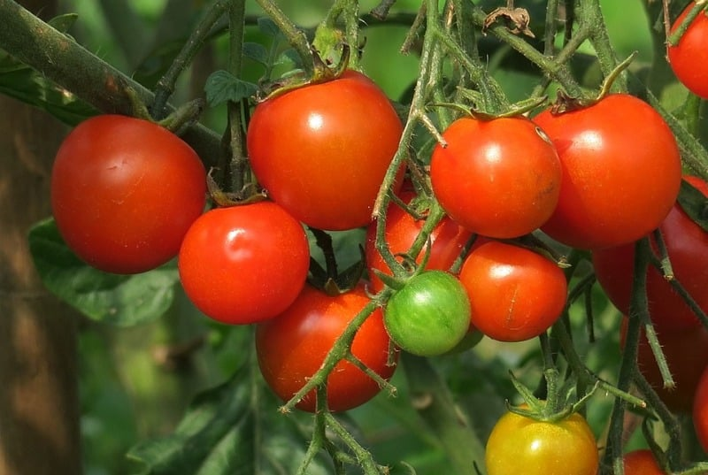

टमाटर की खेती और रोग रोकथाम
 







इस फसल की खेती अधिक तापमान व सर्दी को सहन नहीं कर सकती।
टमाटर की खेती को करने के लिए उपयुक्त तापमान 18 डिग्री से लेकर 27 डिग्री तापमान को सही माना गया है।
अगर इस खेती को 21 डिग्री से लेकर 24 डिग्री का तापमान मिल जाता है
तो टमाटर स्वाद वाले व ज्यादा लाल रंग के पैदा होते है। इस फसल मे अगर तापमान बहुत ज्यादा यानि 38 डिग्री हो जाता है तो टमाटर के फूल व फल टूटकर नीचे गिर जाते है।
इस खेती को किसी भी तरह की खेती मे कर सकते है। अगर सबसे उपयुक्त खेती के लिए मिट्टी की बात करे
तो आपको इस खेती को बढ़िया जल निकास वाली रेतीली दोमट मिट्टी मे इस खेती को करनी चाहिए।
इस तरह की मिट्टी मे पर्याप्त मात्रा मे उर्वरक यानि खाद की मात्रा होनी जरूरी है।फसल की बुवाई करने से पहले आपको खेत की अच्छी तरह से 4 बार जुताई कर लेनी है।
अगर मिट्टी समतल नहीं है तो समतल जरूर कर ले। खेत की अंतिम जुताई करते समय आपको मिट्टी मे सड़ी हुई गोबर खाद मिला लेनी है।
व कुछ दिनों के लिए मिट्टी को धूप लगने के लिए छोड़ देना है ताकि मिट्टी मे मिले हुई रोगाणु व छोटे किट नष्ट हो सके।
बिजाई का समय व बीज की मात्रा
फसल को उगाने का सही समय वर्षा ऋतु मे जून से जुलाई का महिना माना गया है व सर्दी के समय मे जनवरी व फरवरी महीने को माना गया है।
इस खेती को हमेशा जहा पर पाला नहीं पड़ता है वहाँ पर ही की जाने चाहिए। टमाटर की फसल पाले को सहन न कर सकने वाली खेती है।
इस खेती को उगाने के लिए सबसे पहले नर्सरी तैयार की जाती है। नर्सरी को तैयार करने के लिए प्रति हेक्टयेर 350 ग्राम से 400 ग्राम बीज को काफी माना गया है।
टमाटर की खेती मे खाद व उर्वरकों का प्रयोग
बढ़िया पैदावर लेने के लिए खेती मे उर्वरकों का जरूर प्रयोग करना चाहिए। टमाटर की खेती करने की तकनीक के बारे में बात करने के साथ ही बात कर लेते है
उर्वरको की भी। इस खेती में आपको 25 मेट्रिक तन तक सदी हुई गोबर खाद देनी होती है।
इसके साथ ही आपको 200 किलोग्राम नत्रजन व 100 किलोग्राम फास्वफोरस इसके बराबर ही आपको पोटास को फसल में देना है।
सिचाई कब करे
टमाटर की खेती की सिचाई आपको सही समय के अंतराल पर ही करनी चाहिए यानि सर्दी के मौसम मे आपको 10 दिन से 15 दिन मे सीची करनी चाहिए।
और गर्मी के मौसम मे पानी की ज्यादा फसल को आवश्यकता होती है अत: आपको इस समय 6 से 7 दिन बाद सिचाई करते रहना चाहिए।
पौधों की स्टेकिंग करना
खेती मे पौधों के जैसे ही फूल आना शुरू हो जाते है। आपको टमाटर के पौधों को बांस की लकड़ी या फिर लकड़ी के डंडों की मदद से पौधों को सहारा देना शुरू कर देना चाहिए।
ताकि टमाटर के फल व फूल मिट्टी के संपर्क मे आने से खराब न हो। अगर पौधों को सहारा देने के समय की बात करे तो
आपको यह काम टमाटर की खेती की रोपाई के 30 दिन से 40 दिन के बाद सहारा देना शुरू कर देना चाहिए।
खरपतवार का नियंत्रण
खेती से भारी मात्रा मे पैदावार लेने के लिए आप कोई भी खेती कर लो आपको खरपतवार नियंत्रण जरूर करना होगा।
टमाटर की खेती मे खरपतवार का नियंत्रण करने के लिए आपको निराई व गुड़ाई करते रहना है।
जब फल व फूल लग्न शुरू हो जाए उस समय एक बार और निराई गुड़ाई का कार्य करना है।
इसी के साथ ही अगर पौधों मे किसी तरह का रोग हो जाता है तो आपको समय रहते रासायनिक दवा के प्रयोग से रोग पर नियंत्रण पाना है।
फलों की तुड़ाई का सही समय
टमाटर की खेती मे जब फल अच्छी तरह से पककर तैयार हो जाए। तब ही आपको टमाटर की तुड़ाई करनी चाहिए। जब फल हल्के लाल रंग के दिखने लग जाए,
तब आपको टमाटर को तोड़ लेना चाहिए। आपको तोड़े गए टमाटर को अलग – अलग करना का कार्य जरूर करना चाहिए।
अगर कोई टमाटर छोटा है या दागी है तो उसे अलग करे व मोठे व बढ़िया टमाटर को केरेट मे भरकर मंडी मे बैचे।